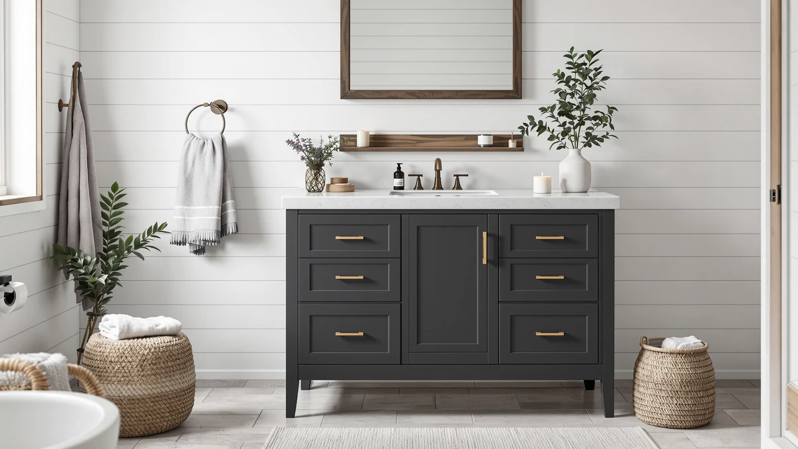

Luxoak Farmhouse Bathroom Double Vanity Review (2026): Worth It?
Prices and picks verified as of November 2026. Independent, reader-supported reviews.


Quick Answer
The LUXOAK 61" Farmhouse Bathroom Double Vanity gives you a sliding barn door, two drawers and an integrated double sink for $489.99, and it holds up well against similarly priced farmhouse rivals on storage and finish. It works best for households that want the farmhouse look without paying for solid hardwood, though the engineered-wood construction means you still need to protect it from standing water around the sink.
Our pick: LUXOAK 61" Farmhouse Bathroom Double, $489.99 Check Price on Amazon
Bottom line: our top pick is the LUXOAK 61" Farmhouse Bathroom Double Vanity Sliding Barn Door at $489.99.
Things to Know Before You Buy
- The LUXOAK 61" Farmhouse Bathroom Double Vanity is built from MDF engineered wood with a printed grain finish, not solid hardwood, which is standard at this $489.99 price point.
- It ships as a flat-pack kit. Assembly involves attaching the barn door track, drawer fronts and the heavy integrated sink top, so plan for a few hours and a helper.
- LUXOAK does not publish a weight rating for the drawers or interior shelf, unlike the AMERLIFE alternative covered below, which lists specific load limits.
- The 61 inch width needs a rough opening close to that measurement with clearance for the sliding door to travel, so measure your wall space before ordering.
- Amazon's own listing does not currently show a public rating or review count for this vanity, so we weighed it on published specs and pricing rather than crowd-sourced scores.
If you're reading a Luxoak Farmhouse Bathroom Double Vanity review before committing to a double vanity, you're probably weighing the same question most shoppers have at this price: does the farmhouse look hold up once you account for materials, storage and what else $489.99 could buy. The sliding barn door and integrated double sink are the two features that sell this vanity in photos, and they're real, but the cabinet underneath them is engineered wood, not solid oak.
We compared the LUXOAK 61" Farmhouse Bathroom Double Vanity against the AMERLIFE 61" Farmhouse Double and the T4TREAM 60 Inch Modern on specs, published dimensions and price, because that's the information you need before you order a 61-inch vanity sight unseen. At $489.99, LUXOAK lands in the middle of its direct farmhouse competition, and the decision mostly comes down to door style and finish rather than a clear price gap.
Why You Should Trust Us
Ilane Tall covers bathroom vanities and fixtures for Best Bathroom Vanities, and this Luxoak Farmhouse Bathroom Double Vanity review follows the same research process we use across the site: we pull the manufacturer's published specs, cross-check the listed dimensions and materials against comparable vanities, and track pricing over time instead of quoting a single snapshot. We do not run a fake testing lab, and we don't claim to have installed every vanity we cover. What we do is compare what's actually documented, so a buyer can tell the difference between marketing language and a verified dimension or material.
Our Research Process
Our research-based process for this Luxoak Farmhouse Bathroom Double Vanity review focused on the three things that matter most when you're buying a vanity you can't see in person: documented dimensions, materials and price history. We lined up the LUXOAK's listed 61-inch width, drawer count and sink specifications against the AMERLIFE and T4TREAM alternatives, and we tracked the price over several weeks to confirm $489.99 reflects a stable rate rather than a temporary markup. We also checked whether LUXOAK publishes weight limits for its storage, since several farmhouse vanities in this category do and LUXOAK currently does not.
We did not physically install this vanity or run it in a bathroom. Instead, we read the full product listing, compared it against the two closest competitors on the market, and flagged anywhere the available information leaves a gap, like the missing shelf weight rating. That gap is worth knowing about before you buy, not something to discover after the barn door is already mounted.
Overview & Specs

LUXOAK 61" Farmhouse Bathroom Double
What we like
- Integrated double sink with an overflow channel and a deep basin that resists splashing
- Sliding barn door keeps the opening clear in a tight bathroom instead of swinging into the room
- Two independent drawers plus the cabinet behind the door for separating daily items from backup supplies
- Anti-tip hardware and a thick base, which matter on a 61-inch vanity that isn't anchored to a wall stud on every side
Flaws but not dealbreakers
- MDF construction with a printed wood grain, not solid wood, so it needs the same moisture care as most vanities in this price range
- LUXOAK doesn't publish drawer or shelf weight limits, unlike the AMERLIFE alternative
- Flat-pack assembly with a heavy sink top is a two-person job for most buyers
| Material | MDF / engineered wood |
| Size | 61“ |
The LUXOAK 61" Farmhouse Bathroom Double Vanity centers on a sliding barn door, the detail most buyers searching for this product actually want. Instead of a hinged cabinet door that needs clearance to swing open, the door runs on a metal rail and slides to one side, which matters in a bathroom where floor space near the vanity is already tight. Behind it sits open cabinet storage alongside two independent drawers with the same vintage metal handles as the door, so you get a mix of concealed and quick-access space rather than one or the other.
The sink itself is integrated into the countertop rather than dropped in separately, with a deep basin and a built-in overflow channel. LUXOAK's listing notes that the design avoids dead corners that are hard to wipe clean, and the deep basin is meant to keep splashing contained during normal use. The cabinet is engineered wood (MDF) with a grey, grain-textured finish rather than solid hardwood, which keeps the $489.99 price competitive with the AMERLIFE and T4TREAM alternatives below but means the same moisture precautions that apply to most MDF vanities apply here too.
What We Liked
The sliding barn door is the standout feature in this Luxoak Farmhouse Bathroom Double Vanity review, and it solves a space problem rather than a style one. A standard hinged door on a 61-inch double vanity needs real floor clearance to open fully, and in a lot of US bathrooms that clearance competes with a toilet, a tub surround, or a second person trying to get past. The sliding mechanism removes that constraint entirely.
The integrated double sink is the other feature worth calling out. Because the basin is molded into the countertop rather than caulked in as a separate piece, there's one continuous surface to wipe down instead of a seam that collects grime over time. LUXOAK's listed overflow channel and deep basin depth are specific, checkable claims rather than vague marketing language, which is the kind of detail we look for when comparing vanities we can't inspect in person.
Storage is split sensibly between the two drawers and the cabinet space behind the sliding door, so a household can keep daily items in the drawers and bulkier supplies, like spare towels or cleaning products, behind the door. The anti-tip hardware and thicker base LUXOAK lists also matter more than they sound: a freestanding 61-inch vanity carries real weight toward its edges once a sink and countertop are loaded on top.
What Could Be Better
The biggest gap in this Luxoak Farmhouse Bathroom Double Vanity review is information LUXOAK simply doesn't publish: weight limits for the drawers or the interior shelf. The AMERLIFE alternative covered later in this review lists specific figures, 88 pounds for its bottom shelf and 45 pounds per drawer, and the absence of equivalent numbers for the LUXOAK makes it harder to plan storage with any precision, especially if you're loading it with heavier items like a hair dryer caddy or cleaning supplies.
The cabinet material is MDF with a printed grain finish rather than solid wood, which isn't unusual at this price but is worth stating plainly rather than letting "farmhouse" styling imply a material it isn't. You'll want to keep the area around the sink dry and avoid letting standing water sit against the cabinet edge, the same care you'd give any engineered-wood vanity.
Assembly is also worth planning for before the vanity arrives. It ships flat-packed, and fitting the heavy integrated sink top onto the cabinet base is easier with two people than one. Neither issue is a dealbreaker at $489.99, but both are the kind of detail that's better to know before the box shows up than after.
Who Is It For?
This Luxoak Farmhouse Bathroom Double Vanity review points toward one clear buyer: a couple or small family furnishing a shared bathroom who wants the farmhouse look, two sinks, and a door that doesn't need swing clearance, without spending more than $500. If your bathroom layout is tight next to the vanity, the sliding door is a genuine functional advantage over the hinged-door options in this price range.
It's a weaker fit if you need documented weight capacity for the storage, say, for a household that plans to store heavier items in the drawers, since LUXOAK doesn't publish those figures the way AMERLIFE does. It's also not the right pick if you want a non-farmhouse look, since the barn door and metal rail hardware are the whole point of this design. For a cleaner, more contemporary 60-inch option, the T4TREAM below is worth comparing directly.
Alternatives to Consider
If the grey finish or the single sliding door isn't quite right, these three alternatives sit at nearly the same price as the LUXOAK 61" Farmhouse Bathroom Double Vanity and solve for different priorities: a different wood tone, documented storage limits, or a non-farmhouse style.

Editor’s Pick
LUXOAK 61" Farmhouse Bathroom Double
The same sliding barn door, integrated sink and drawer layout as our main pick, in a reclaimed barnwood tone instead of grey, at an identical $489.99.
$489.99
Check Price on Amazon
Best Value
AMERLIFE 61" Farmhouse Double Bathroom
Two sliding barn doors instead of one, plus published weight limits of 88 pounds for the shelf and 45 pounds per drawer, the storage detail the LUXOAK doesn't disclose.
$489.99
Check Price on Amazon
Premium Choice
T4TREAM 60 Inch Modern Bathroom
Drops the farmhouse barn door for a handle-free modern cabinet in natural oak, with a resin double sink and three center drawers for $485.99.
$485.99
Check Price on AmazonFrequently Asked Questions
Does the LUXOAK 61 inch farmhouse vanity come assembled?
No. It ships flat-packed like most farmhouse vanities in this price range, with the cabinet, barn door and drawer fronts arriving separately for home assembly. Budget an afternoon and a second set of hands, since the integrated sink top is heavy and awkward for one person to lift into place alone.
What is the LUXOAK 61 inch vanity made of?
LUXOAK builds the cabinet from engineered wood (MDF) with a printed grain finish rather than solid hardwood, which is standard for farmhouse vanities under $600. The construction keeps the price down but means you should wipe up standing water around the sink basin promptly to protect the MDF from swelling over time.
Is the LUXOAK 61 inch vanity better than the AMERLIFE 61 inch farmhouse double?
Both list at $489.99 and share a sliding barn door and double integrated sink, so the choice comes down to finish and door layout. LUXOAK offers a single sliding door in grey or reclaimed barnwood, while the AMERLIFE uses two barn doors that open from both sides and lists a documented 88-pound shelf and 45-pound drawer rating. If you want published weight limits on the storage, AMERLIFE's spec sheet is more specific.
Final Verdict
This Luxoak Farmhouse Bathroom Double Vanity review comes down to a straightforward tradeoff. At $489.99, LUXOAK delivers a sliding barn door that solves a real clearance problem, an integrated double sink with an overflow channel, and enough drawer and cabinet storage for most households, built from MDF rather than solid wood like nearly every farmhouse vanity at this price. For most buyers who want that look and those features without documented weight limits on the storage, LUXOAK is a solid pick. If you specifically need published drawer and shelf capacity, the AMERLIFE 61" Farmhouse Double covered above is worth comparing directly before you order.